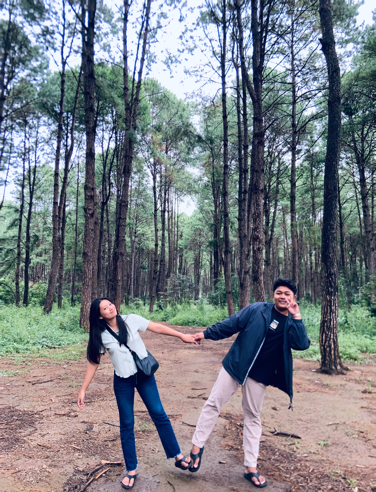

ပထမဆုံးခရီးအတူတူသွားခဲ့ရတာ အခုထိပြန်တွေးရင် ရင်ခုန်ရတုန်းပဲ 🤍
ပထမဆုံးခရီးအတူတူသွားခဲ့ရတာ အခုထိပြန်တွေးရင် ရင်ခုန်ရတုန်းပဲ 🤍

နေပြည်တော်ကိုနေ့ချင်းပြန်သွားလိုက်လာလိုက်လုပ်ပြီး နှစ်ယောက်ထဲလျှောက်သွားခဲ့ရတာလဲ အမှတ်တရပဲ😭

ဒီအရုပ်လေးဆိုအမှတ်တရပဲ မှတ်မိမယ်ထင်တယ် မတော်ရင်အက်အရုပ်ကြောင့်ရန်ဖြစ်ရမှာလေ🤣

First time tryပြီး နှစ်ယောက်သားဘာမှမမြင်ပဲအော်နေတာ VRချွတ်လိုက်မှ လူဝိုင်းအုံကြည့်နေတာရော🤣

လက်တန်းပိုစ့်ပေးပြီးအသဲပုံလေးဖြစ်သွားလို့သဘောကျနေတဲ့ကလေး🤍 အမှတ်တရတွေကတော့မကုန်နိုင်ဘူး❤️
❤️ Happy 7th Anniversary, My Love ❤️
ကိုကိုတို့ဆယ်ကျော်သက်အရွယ်ကနေစပြီး အခု 7 နှစ်ပြည့်လာတဲ့အထိနှစ်ယောက်အတူတူလျှောက်လာနိုင်ခဲ့တာအများကြီးအခက်အခဲတွေအမှတ်တရတွေနဲ့ပြည့်နေတာခဏလေးလိုပါပဲ
ဒီ 7 နှစ်အတွင်း ပျော်ရွှင်မှုတွေ စိတ်ဆင်းရဲမှုတွေအငြင်းပွားမှုတွေ အဝေးမှာနေရတဲ့နေ့တွေအများကြီးရှိခဲ့ပေမယ့် ကလေးကိုကို့ဘဝထဲကထွက်မသွားဘဲ ဘေးမှာအမြဲရှိပေးခဲ့တယ် ☹️❤️
အခုတော့ကလေးနဲ့ကိုကိုအတူတူမရှိနိုင်ပေမဲ့ ကလေးကိုချစ်တဲ့စိတ်ကတစက်ကလေးမှလျော့မသွားတဲ့အပြင် ဝေးနေတဲ့ချိန်မှာတခုသတိထားမိလာတာကပိုတန်ဖိုးထားတက်လာတယ် ☹️
ကိုကိုအားနည်းနေတဲ့အချိန်တွေမှာအားပေးခဲ့တာတွေရော ဒီနေ့အထိ ကိုကို့ကိုရွေးချယ်ပြီး ချစ်ပေးနေလို့ အများကြီးကျေးဇူးတင်တယ် ❤️
7 နှစ်ဆိုတာအချိန်ခဏလေးလိုပါပဲ ကလေးရယ်။
ကိုကိုကနောက်ထပ် 7 နှစ်၊ 17 နှစ်၊ နှစ် 70 အထိလည်း ကလေးနဲ့အတူတူရှိနိုင်ဖို့ကြိုးစားနေမှာနော် ❤️
No matter how far you are,
you will always be my favorite person,
my peace,
and my forever. ❤️
I love you, today and always. 🌷